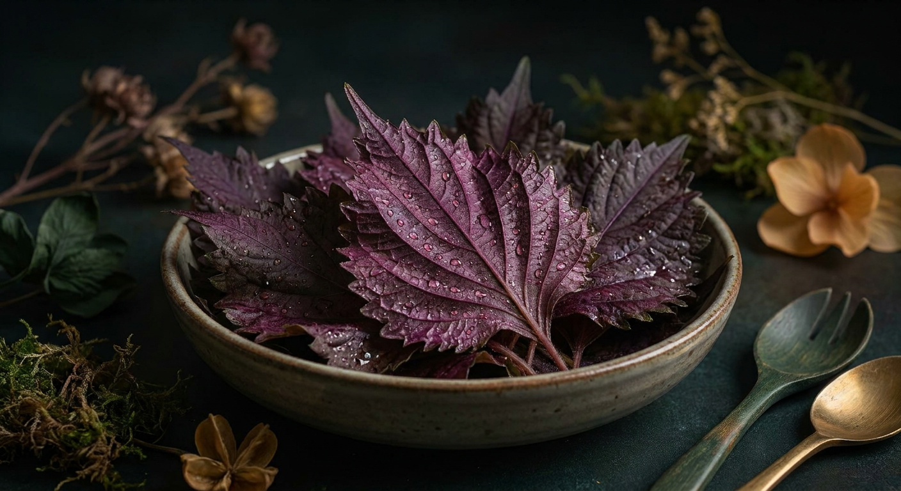

紫蘇ジン完全ガイド
使用銘柄11本を徹底比較

紫蘇（しそ）は、日本の食卓に最も近い和ハーブです。青じそと赤じそでは香りも色も異なり、ジンに使われたときの表情も変わります。刺身のつま、梅干しの色付けなど、用途が身体に染み込んでいる素材であるぶん、香りの再現度がそのまま評価に直結します。
本ページの銘柄は、Gin-DB掲載の全銘柄から公式情報で紫蘇（しそ）の使用が確認できたもののみを抽出しています。最終更新：2026-08-29
紫蘇（しそ）のジンを買う
このページの掲載銘柄のうち、国際コンテストの受賞歴があり、公式希望小売価格が確認できているものだけを載せています。編集部の主観による順位づけはしていません。掲載外の銘柄も、各銘柄ページから購入先を開けます。
PR ／ アフィリエイトリンクを含みます。
1. 紫蘇の香りの正体
シソの独特の香りの主成分はペリルアルデヒドです。シソ精油の50%以上を占めるとされ、ほかにリモネンやピネンといった、柑橘や針葉樹とも共通する成分を含みます。
リモネンは柑橘の皮に、ピネンは針葉樹に多い成分です。つまり紫蘇は、ジンの骨格（ジュニパー＝ピネン系）とも、柑橘ボタニカル（リモネン系）とも成分を共有していることになり、和ハーブでありながらジンに馴染みやすい素材です。
2. 青じそと赤じその違い
青じそは葉が緑色で、刺身のつまや薬味として最も一般的に使われます。香りが立ちやすく、ジンでは爽快で青い方向に働きます。
赤じそはシソニンというアントシアニン系の色素を含みます。シソニンは酸と反応して赤く発色する性質があり、梅干しが鮮やかな赤になるのは、梅のクエン酸と反応するためです。
この性質から、赤じそを使ったジンでは、レモンなど酸を加えたときに色が変化する製品もあります。色の変化は着色ではなく、素材由来の反応によるものです。
3. 紫蘇ジンの飲み方
ソーダ割りが最も素直で、青い香りがまっすぐ立ち上がります。薬味としての紫蘇の記憶と直結する飲み方です。
食中酒としての適性が高く、刺身・冷奴・そうめん・天ぷらなど、普段から紫蘇を添える料理とそのまま合わせられます。
赤じそ系で色の変化がある銘柄は、レモンやライムを搾ったときの見た目の変化も含めて楽しめます。
4. 紫蘇（しそ）を使用しているクラフトジン 11銘柄
Gin-DB掲載の全銘柄から、公式情報で紫蘇（しそ）の使用が確認できたもののみを抽出しています。度数・容量・価格は各蒸溜所の公式情報に基づき、確認できないものは「未確認」と表示しています。
1. 季の美 京都ドライジン
京都蒸溜所（京都府京都市）
45% ／ 700ml ／ 市場実勢 約¥4,500〜¥5,500（オープン価格）
2. 135° East Hyogo Dry Gin
海峡蒸溜所（兵庫県明石市）
42% ／ 700ml ／ 公式希望小売は未表示
3. KOBE GIN YAMA
神戸蒸溜所（兵庫県神戸市北区）
43% ／ 700ml ／ ¥3,850（税込・公式）
4. TAN・TAKA・TAN GIN（鍛高譚ジン）
合同酒精 旭川工場（北海道旭川市）
40% ／ 700ml ／ ¥3,520前後（税込・参考小売）
2025年2月リニューアルで37%→40%に変更
5. TATEYAMA GIN BLEND Series
TATEYAMA BREWING（千葉県館山市）
200ml ／ ¥2,200（税込）
6. SAKURAO GIN ORIGINAL
サクラオB&D（広島県廿日市市）
47% ／ 700ml ／ ¥2,200前後（税込・市場実勢）
7. SAKURAO GIN LIMITED
サクラオB&D（広島県廿日市市）
700ml ／ ¥4,400前後（税込・市場実勢）
8. FUEKI（フエキ）
深川蒸留所（東京都江東区）
48% ／ 500ml ／ ¥5,200（税込・公式希望小売）
9. SHISO GIN
野沢温泉蒸留所（長野県下高井郡野沢温泉村）
41% ／ 500ml ／ ¥4,850（税込・公式）
10. 和美人（Japanese GIN 和美人）
マルス津貫蒸溜所(本坊酒造)（鹿児島県南さつま市）
47% ／ 700ml ／ ¥4,400（税込・ギフト箱付）／¥4,180（ボトルのみ）
TWSC Best of the Best 2024、ISC 2024 Double Gold、SFWSC 2024 Gold
11. 和美人 ダマスクローズ
マルス津貫蒸溜所(本坊酒造)（鹿児島県南さつま市）
45% ／ 495ml ／ ¥3,850（税込）
限定
5. 11銘柄スペック比較表
| # | 銘柄 | 所在地 | 度数 | 価格 |
|---|---|---|---|---|
| 1 | 季の美 京都ドライジン | 京都府 | 45% | 市場実勢 約¥4,500〜¥5,500（オープン価格） |
| 2 | 135° East Hyogo Dry Gin | 兵庫県 | 42% | 公式希望小売は未表示 |
| 3 | KOBE GIN YAMA | 兵庫県 | 43% | ¥3,850（税込・公式） |
| 4 | TAN・TAKA・TAN GIN（鍛高譚ジン） | 北海道 | 40% | ¥3,520前後（税込・参考小売） |
| 5 | TATEYAMA GIN BLEND Series | 千葉県 | 未確認 | ¥2,200（税込） |
| 6 | SAKURAO GIN ORIGINAL | 広島県 | 47% | ¥2,200前後（税込・市場実勢） |
| 7 | SAKURAO GIN LIMITED | 広島県 | 未確認 | ¥4,400前後（税込・市場実勢） |
| 8 | FUEKI（フエキ） | 東京都 | 48% | ¥5,200（税込・公式希望小売） |
| 9 | SHISO GIN | 長野県 | 41% | ¥4,850（税込・公式） |
| 10 | 和美人（Japanese GIN 和美人） | 鹿児島県 | 47% | ¥4,400（税込・ギフト箱付）／¥4,180（ボトルのみ） |
| 11 | 和美人 ダマスクローズ | 鹿児島県 | 45% | ¥3,850（税込） |
6. よくある質問（FAQ）
Q. 紫蘇ジンは赤いですか？
A. 赤じそを使った銘柄では色が付くことがありますが、青じそを使ったものや、蒸留で香りだけを取ったものは無色透明です。色は使用部位と製法によります。
Q. 大葉と紫蘇は違うものですか？
A. 植物としては同じシソですが、流通上は青じその葉を「大葉」と呼ぶことが一般的です。銘柄によって表記が異なるため、本ページでは公式表記のまま掲載しています。